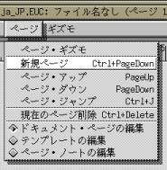
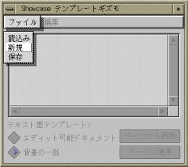
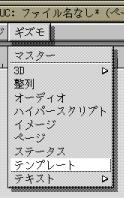
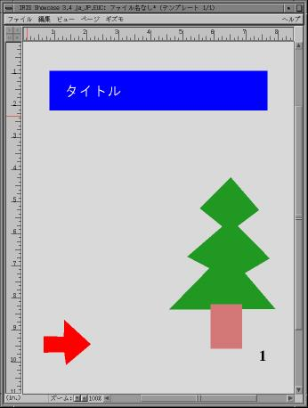
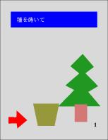
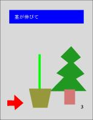
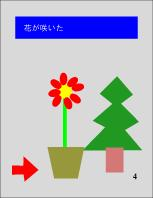
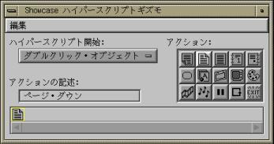
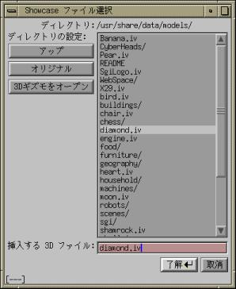

showcase では、ワープロのように、 複数のページにわたる文書も作成できます。 現在の文書にページを追加するには、 メニューバーの“ページ”から“新規ページ”を選ぶか、 [Ctrl] キーを押しながら [Page Down] をタイプします （今はまだページの追加を行わないでください）。このとき、ページ間の移動は [Page Down] と [Page Up] でできます。 また、現在表示されているページを削除するには、 [Ctrl] キーを押しながら [Delete] をタイプします。
以上の操作は、“ページギズモ”でも行うことができます。


では、これから複数のページにわたる文書の作成を行ってみましょう。複数のページからなる文書を作成する場合、 ページ間でレイアウトが統一されていた方が望ましいことが、 少なからずあります。 そういうときには、 あらかじめページの“テンプレート”を作成しておきます。 テンプレートは、 異なるページの間で共有される『背景』のようなものです。 メニューバーの“ギズモ”から“テンプレート”を選んでください。
現れたテンプレート・ギズモのメニューバーの“ファイル”から
“新規”を選んでください。
すると、テンプレートギズモの中に、
黄色い枠が一つ表示されると思います。
それでは、この黄色い枠をダブルクリックしてください。
テンプレートギズモの右下に“編集終了”というボタンが現れます。

次に、メインの“作図ウィンドウ"に戻って、 テンプレートの作図を行います。
この作業の途中、
showcase の画面表示がおかしくなったら、
一度 showcase を終了して、
最初からもう一度やり直してください。
ページに適用されたテンプレートは、 背景のように、そのページの編集の対象にはならないと思います。 ちょっとクリックしてみて、 修正できないことを確かめてみてください。
この状態で Ctrl-PageDown をタイプするなどしてページを追加すると、 追加されたページにも現在のページに適用されているテンプレートが適用されます。 とりあえず３ページ追加して、全部で４ページにしてください。
テンプレートに埋め込んだページ番号は、 そのページのページ番号を示すようになっているので、 ページを追加する度に増えていくと思います。 [Page Up] キーや [Page Down] キーを タイプしてみて、ページ番号だけが変化することを確かめてください。
テンプレートの中に書いたテキスト（文字）を、 ページ側で修正できるようにすることもできます。 こうすると、テンプレートでテキストの位置を決めておいて、 ページごとに同じ位置に異なるテキストを書くことができます。
ついでに、余裕があれば、 それに合わせて適当なイラストを書いてみてください。 そうして [Page Up] キーや [Page Down] キーを タイプすると、 パラパラ漫画のように画面が変わると思います。



今の状態では、ページの移り変わりは一瞬で行われますが、 これに特殊効果を加えることもできます。 ページギズモを表示してページを選択し、 “移行”のポップアップメニューから“瞬間”以外の好きなものを選んでください。

テンプレートギズモのテンプレートをダブルクリックして、 テンプレートの編集を行う状態にしてください。
[Page Up] キーで１ページ目に戻ったあと、 作図ウィンドウに描かれている矢印をクリックしてみてください。
ハイパースクリプトには、
ほかにもたくさんの機能があります。
自分でいろいろ試してみて、
自分なりの作品を作ってみてください。
以上の操作が終わったら、 一度 showcase を終了してください。 その際、作成した文書を保存しておいてください。

マスターギズモの“３次元図形の貼り付け” （丸・三角・四角のボタン）を選ぶと、 ファイル選択ウィンドウが開きます。 あらかじめ用意されている３次元図形のファイル名の一覧が表示されますから、 その中から適当なものを選んで、 “了解”のボタンをクリックしてください。ファイル選択ウィンドウにおいて、 ファイル名の最後が "/" になっているものは、 ディレクトリと言います。 これは複数のファイルをまとめたもので、 これを選択して“了解”ボタンをクリックすると、 その中にあるファイルの一覧が現れます。 元の場所に戻るには“アップ”のボタンをクリックします。
図形ファイルを選択して“了解”ボタンをクリックすると、
作図ウィンドウに大きな枠が現れますから、
マウスでそれを適当な位置に置いてください。
作図ウィンドウに貼り込まれた図形をダブルクリックすると、 その図形の編集モードになります。

“材質”は図形の色や光の反射係数、 “テクスチャ”は物体表面に貼り付ける画像を指定します。 材質として、“トロピカル”の右下隅（白色）を指定してみましょう。 次にテクスチャとして、“その他”の右上隅のものを指定してみましょう。
この状態で、材質を黄色（“トロピカル”の左上隅）に変更すると、 全体的に気色っぽくなったと思います。 このように、材質とテクスチャは掛け合わせて図形に適用されます。


では、材質を白色に戻し、 テクスチャをつけていない状態 （右下隅のテクスチャ）に戻してください。 Ctrl-Z を何回かタイプして以前の状態に戻すこともできます。
 次にテクスチャとして、
“画廊”の中の『モナリザ』を選択してみてください。
たぶん、モナリザはずれた位置に表示されて、
ほとんど見えないと思います。
そこで、
作図ウィンドウの“ギズモ"から
“3D”→“テクスチャ”という順にメニューを選んで、
テクスチャギズモを表示させてください。
次にテクスチャとして、
“画廊”の中の『モナリザ』を選択してみてください。
たぶん、モナリザはずれた位置に表示されて、
ほとんど見えないと思います。
そこで、
作図ウィンドウの“ギズモ"から
“3D”→“テクスチャ”という順にメニューを選んで、
テクスチャギズモを表示させてください。
“回転”、“X平行移動”、“Y平行移動”のバーを動かして、 モナリザが正面に来るようにしてみてください。 “X繰り返し”、“Y繰り返し”を増やすと、 モナリザが増殖します。
適当なところでテクスチャギズモの“適用”のボタンをクリックすれば、 それが作図ウィンドウの図形に現れます。
次に、3Dギズモで“反射”のテクスチャの中央のものを選んでください。 そのあと、3Dギズモのメニューバーの“ビュー” （作図ウィンドウのものではありません）で、 “ワイヤーフレームで移動”を選んでください。 “ワイヤーフレームで移動”には最初チェックマークがついていますが、 これでチェックマークがはずれます。
ここで3Dギズモの“視点の移動”（手の形のボタン）を選んで、
作図ウィンドウの図形をいろんな角度から見てみましょう。
テクスチャは図形の表面に貼り付いているように見えると思います。
なお、視点の位置を最初に戻すには、
3Dギズモのメニューバーの“ビュー”から“正面”を選んでください。
そうしたら、こんどはテクスチャギズモで、 “リフレクション”を選び、 “適用”のボタンをクリックしてから もう一度視点を移動してみましょう。 図形にテクスチャが映り込んでいるように見えると思います。 ほかの“反射”のテクスチャを選んで、 いくつか試してみてくださ （残念ながら、showcase では“屈折”は表現できません）。


今の状態では、 図形は“ヘッドライト”（見てる側から当てる光）だけで照明されています。 作図ウィンドウの“ギズモ”から“3D”→“照明”という順にメニューを選んで、 照明ギズモを表示してください。
“光源１”をクリックすると光源の方向を示す矢印が現れますから、 それを好きなところに移動してみてください。
 3Dギズモの“立体ロゴの作成”（Ｌのボタン）を選んで、
自分の名前とログイン名を図形に追加してください。
適当な材質やテクスチャを加えたあと、
印刷して提出してください。
3Dギズモの“立体ロゴの作成”（Ｌのボタン）を選んで、
自分の名前とログイン名を図形に追加してください。
適当な材質やテクスチャを加えたあと、
印刷して提出してください。
文字の字体はマスターギズモ”で変更できます。
なお、先ほど作成した“プレゼンテーション”の文書も印刷して、
併せて提出してください。